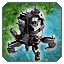
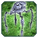
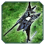
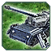
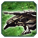
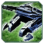
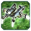

Т2 Ленд
 Мангуст
Мангуст
Мангуст апнут и стал дороже,теперь он должен справлятся со своей задачей.
-
Изменения
- Дальность атаки пулемета:
34 37
- Количество снарядов пулемета:
20 25
- Урон пулемета:
15 17
- Скорострельность пулемета:
10/70 10/65
- Дальность атаки гранатомета:
34 37
- Урон гранат:
55 100
- Сплеш гранат:
3 4
- Скорострельность гранатомета:
10/66 10/75
- Скорость передвижения:
2.9 3
- Цена по массе:
200 250
- Цена по энергии:
1000 1250
 Вагнер
Вагнер
Снова жалуются на вагнера. Теперь он не такой быстрый как остальные ховер танки.
-
Изменения
- Скорость передвижения:
3.7 4
 Пламя
Пламя
Эонский ховер стал имбой, режем мувспид.
-
Изменения
- Скорость передвижения:
4.8 4.3
 Яшавох
Яшавох
Скорость стала запредельной, потные мужики обузят и булят других потных мужиков. Нерфим.
-
Изменения
- Скорость передвижения:
5 4.5
Т3 Ленд
 Кирпич
Снова, кибранофилы, апают свою любимую расу. В ФАФ балансе, кирпич, быстрый, дальнобойный, скорострельный, жирный юнит, который тяжело остановить, а если в сетапе есть мобильное стелс
поле, то, гг всему. Мы нерфим, кирпича, не сильно, но, он заметно ослаблен.
Отняли дальность стрельбы сделали медленнее.
-
Изменения
- Дальность атаки всех орудий:
34 32
- Максимальная скорость вперед/назад:
2.4 2.2
- Максимальное Ускорение/торможение:
2.4 2.3
 Стервятник (Пузырек/Харба)
Стервятник (Пузырек/Харба)
Пузырька, апнули. Он является, чем то между титанами, и персивалями. Не такой быстрый, как титан, не такой жирный, как персиваль.
-
Изменения
- Урон:
160 180
- Скорость передвижения/торможения/ускорения:
2.95 3.2
- Дальность атаки:
27 29
- Реген щита:
30 35
- Перезарядка щита:
30 25
 Оотум (Тапочек)
Оотум (Тапочек)
Тапок, был ни туда, ни сюда, далеко не стреляет, и не жирный. Мы дали ему, немного хп, и рейндж атаки.
-
Изменения
- ХП:
4700 5000
- Макс ХП:
4700 5000
- Дальность атаки Мейн пушки:
28 30
- Сплеш Мейн гана:
1.3 1.5
- Дальность атаки доп пушек:
22 24
- Урон доп пушек:
64 65
 Фантом
Снайпер-боты были уничтожены в угоду Кибранскому налому кирпичами. Мы посмотрели, какими они были прежде, и сделали что то между тем, что было и тем, что стало, чтобы игроки не обузили
снайперов.
-
Изменения
- Время производства (в сек):
55 44
- Строимость по энергии:
25000 13000
- Дальность стрельбы:
60 70
- Скорость снаряда:
90 120
- Скорость передвижения:
2.4 2.8
 Уша-ах
Вернули, имбу, которая, шотает зазевавшихся, комов на миду.
-
Изменения
- Время производства(в сек):
60 47
- Строимость по энергии:
27000 14000
- Дальность стрельбы:
55 65
- Дальность стрельбы в снайпер моде:
65 75
- Скорость снаряда:
80 100
- Скорость передвижения:
2.2 2.6
 Разрушитель
Апнули и сделали дороже, Т3, мобильную арту. Сделали, их маневренее, потому что, пока они разложутся, пока наведутся, их убьют. Теперь, это юнит, для выбивания, "бункеров мечты",
нубских мидеров.
-
Изменения
- Стоимость по массе:
800 1050
- Время развертывания:
1 1.3
- Урон:
750 950
- Дальность атаки:
90 105
- Сорость передвижения:
2.2 2.4
 Требушет
-
Изменения
- Стоимость по массе:
800 1050
- Время развертывания:
0.8 1.1
- Урон:
450 650
- Дальность атаки:
90 105
- Сорость передвижения:
2.2 2.4
 Спокойствие
Эонская, арта, может стрелять на ходу, поэтому, у нее скорость передвижения, меньше, чем у остальных.
-
Изменения
- Стоимость по массе:
800 1050
- Урон:
1350 1500
- Дальность атаки:
90 105
- Сорость передвижения:
2.2 2.3
 Сутанус
-
Изменения
- Стоимость по массе:
800 1050
- Время развертывания:
0.44 0.8
- Урон:
700 900
- Дальность атаки:
90 105
- Сорость передвижения:
2.2 2.4
 Баланс патч 1.2 "Cybran tears" :
Баланс патч 1.2 "Cybran tears" : Уашавох
Уашавох